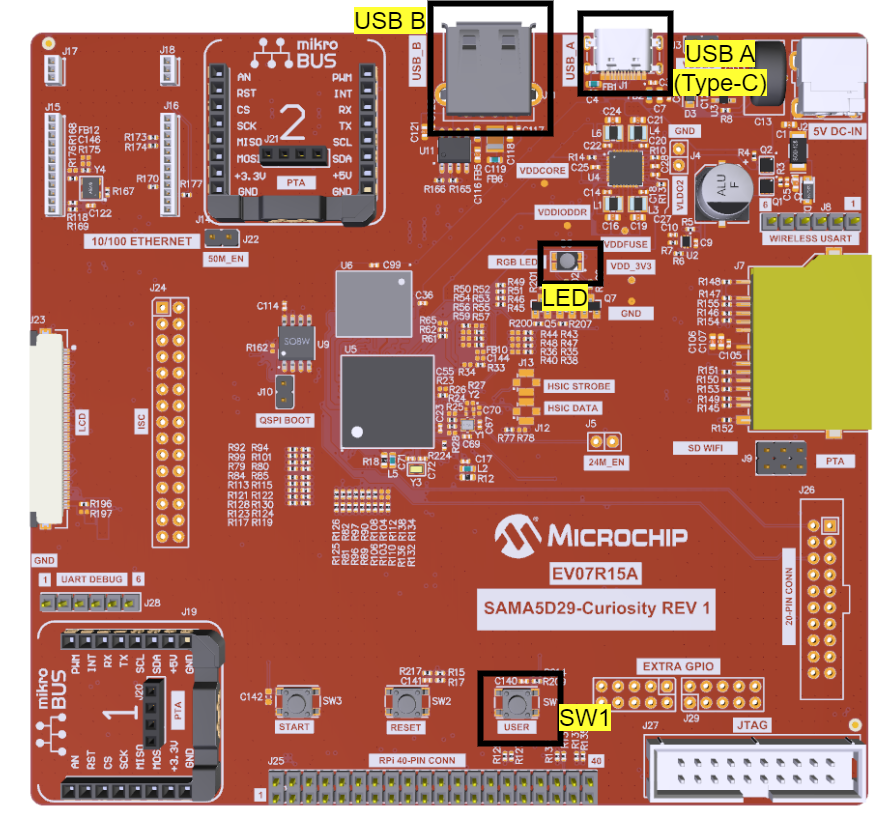
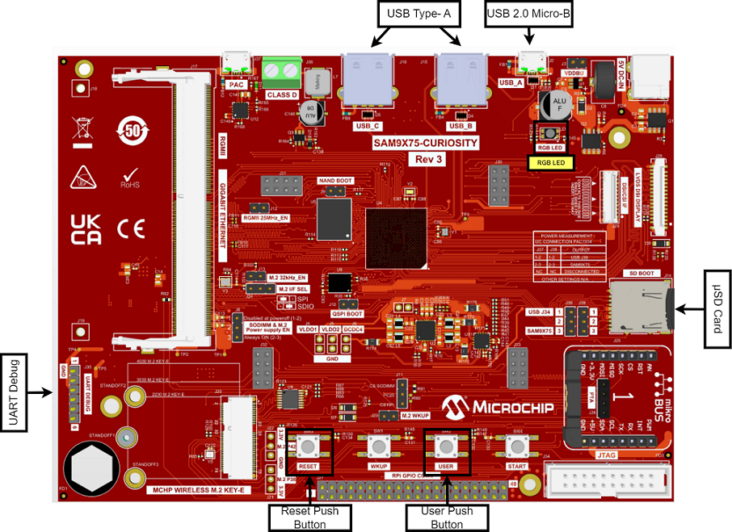
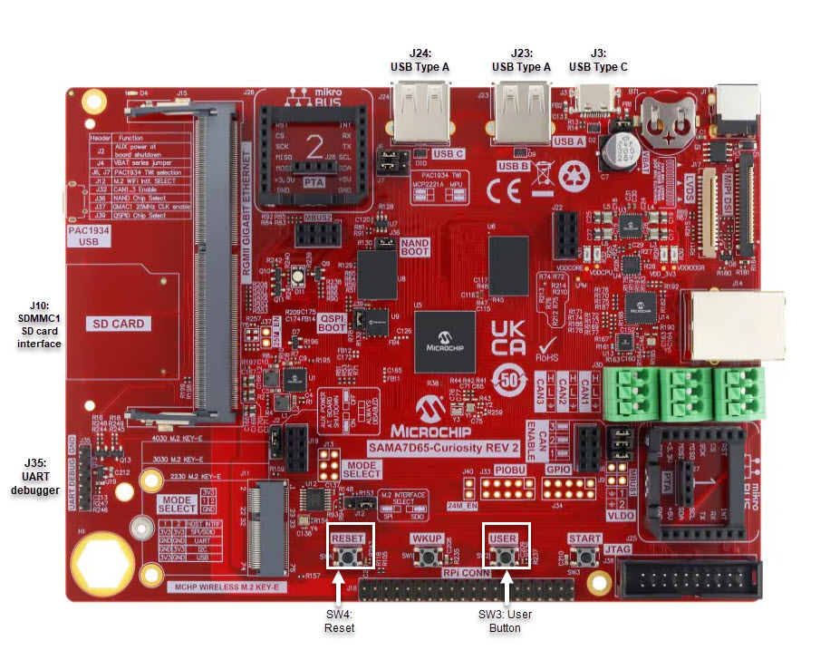

1.15 MSD SD Card Example (msd_sdcard)
This application demonstrates the ability of the MPLAB Harmony USB Device Stack to support USB Mass Storage Device. The application uses SD Card as storage media.
Description
This application creates a USB MSD Device that enumerates as a Flash Drive on the USB host PC. The application allows read / write / modify / delete data from a PC host like any normal Flash drive.
Downloading and building the application
To clone or download this application from Github, go to the main page of this repository and then click Clone button to clone this repository or download as zip file. This content can also be downloaded using content manager by following these instructions.
Path of the application within the repository is usb_apps_device/apps/msd_sdcard.
Following table gives the details of project configurations, target device used, hardware and its IDE. Open the project using the respective IDE and build it.
| Project Name | IDE | Target Device | Hardware / Configuration |
|---|---|---|---|
| pic32mx470_curiosity.X | MPLABX | PIC32MX470F512H | PIC32MX Curiosity Development Board |
| pic32mz_ef_curiosity_2_0.X | MPLABX | PIC32MZ2048EFM144 | Curiosity PIC32MZ EF 2.0 Development Board |
| sam_9x60_ek.X | MPLABX | SAM9X60 | SAM9X60-EK Evaluation Board |
| sam_9x60_curiosity.X | MPLABX | SAM9X60 | SAM9X60 Curiosity Development Board |
| sam_9x60_curiosity_freertos.X | MPLABX | SAM9X60 | SAM9X60 Curiosity Development Board |
| sam_9x75_eb.X | MPLABX | SAM9X75 | SAM9X75-DDR3-EB Evaluation Board |
| sam_a5d2_xult.X | MPLABX | ATSAMA5D27C | SAMA5D2 Xplained Ultra Board |
| sam_a5d27_som1_ek.X | MPLABX | ATSAMA5D27C | SAMA5D27 SOM1 Kit1 |
| sam_a5d27_wlsom1_ek1.X | MPLABX | ATSAMA5D27C | ATSAMA5D27 WLSOM1 EK1 |
| sam_a7g5_ek.X | MPLABX | SAMA7G54 | SAMA7G5 EK Board |
| sam_e70_xult.X | MPLABX | ATSAME70Q21B | SAME70 Xplained Ultra Board |
| pic32cz_ca80_curiosity_ultra.X | MPLABX | PIC32CZ8110CA80208 | PIC32CZ CA80 Curiosity Ultra development board |
| pic32ck_gc01_curiosity_ultra.X | MPLABX | PIC32CK2051GC01144 | PIC32CK GC Curiosity Ultra Development Board |
| pic32cx_sg41_curiosity_ultra.X | MPLABX | PIC32CX1025SG41128 | PIC32CX SG41 Curiosity Ultra Evaluation Board |
| sam_a5d29_curiosity.X | MPLABX | ATSAMA5D29 | SAMA5D29 Curiosity Development Board |
| sam_9x75_curiosity.X | MPLABX | SAM9X75D2G | SAM9X75-Curiosity Development Board |
| sam_a7d65_curiosity.X | MPLABX | SAMA7D65 | SAMA7D65 Curiosity Development Board |
Configuring the Hardware
- Jumper J203 must be shorted between PB08 and VBUS (positions 2 and 3).
- Insert the micro-SD card into the micro-SD Card slot (J700).
- Use TARGET USB J200 connector on the board to connect the USB Device to the USB Host PC.
- LED3 indicates USB Device Configuration Set Complete event (the USB device functionality has been activated by the USB Host).
-
Setup the SD card (Note: exFAT formatted SD Cards are not supported)
- Download harmony MPU bootstrap loader from this location.
- Copy the downloaded boot loader binary (boot.bin) and generated application binary (harmony.bin) into the SD card.
- Insert the SD card into the SDMMC connector J4 on the board.
- Reset the board by pressing the Push Button SW3.
-
Jumpers J20, J21, and J13 must be open.
-
Jumper J2 and J3 must be shorted.
-
Connect the USB Micro-B port J22 on board to the computer using a micro USB cable (to enable the debug com port).
-
Connect the USB Micro-B Connector (J7) on the board to the computer using a micro USB cable.
LED D1 indicates USB Device Configuration Set Complete event (The USB device functionality has been activated by the USB Host).

Note: Reset push button on SAM9X60 EK is labeled as SW3
- Setup the SD card (Note: exFAT formatted SD Cards are not supported)
- Download harmony MPU bootstrap loader from this location.
- Copy the downloaded boot loader binary (boot.bin) and generated application binary (harmony.bin) into the SD card.
- Insert the SD card into the SDMMC0 connector J3 on the board.
- Reset the board by pressing the Push Button "RESET".
- Jumper J4 must be shorted.
- Connect the USB Micro-B Connector (J1) on the board to the computer using a micro USB cable.
- LED D1 indicates USB Device Configuration Set Complete event (The USB device
functionality has been activated by the USB Host).

-
Powered the board with an external power supply (or use the micro AB connector).
-
Setup the SD card (Note: exFAT formatted SD Cards are not supported)
- Download harmony MPU bootstrap loader from this location.
- Copy the downloaded boot loader binary (boot.bin) and generated application binary (harmony.bin) into the SD card.
- Insert the SD card into the SDMMC connector (SDMMC0) on the board.
- Reset the board by pressing the Push Button RESET, then START.
-
Connect USB to serial cable to DBGU0 (to enable debug com port).
-
Connect the USB Micro-AB Connector on the board to the computer using a micro USB cable.
-
LED near VDDCORE inscription on the board indicates USB Device Configuration Set Complete event (The USB device functionality has been activated by the USB Host).SAMA5D2 Xplained Ultra Board

- Setup the SD card (Note:
exFAT formatted SD Cards are not supported)
- Download harmony MPU bootstrap loader from this location.
- Copy the downloaded boot loader binary (boot.bin) and generated application binary (harmony.bin) into the SD card.
- Insert the SD card into the SDMMC1 slot on the board.
- Reset the board by pressing the Push Button BP3.
- Short jumper JP2(DEBUG_DIS).
- Connect the EDBG USB Micro-B port J14 on the board to the computer using a micro USB cable.
- Use the "A5-USB-A" connector (J23 - Micro A/B connector) on the board to connect the USB device to the USB Host.
- RGB LED turning to Green indicates USB Device Configuration Set Complete event (The USB device functionality has been activated by the USB Host).
- To run the demo, the
following additional hardware is required:
- micro-sd Click board
- micro-sd card
- Insert the micro-sd click board into the Mikro BUS 1 connector on the Curiosity PIC32MX470 Development Board.
- Insert the micro-SD card into the micro-SD Card slot of the micro-sd click board.
- USB micro-B port J12 to connect the USB device to the USB Host PC.
- LED1 indicates USB Device Configuration Set Complete event (the USB device functionality has been activated by the USB Host).
- To run the demo, the
following additional hardware is required:
- micro-sd Click board
- micro-sd card
- Insert the micro-sd click board into the Mikro BUS 1 connector on the Curiosity PIC32MZ EF 2.0 Development Board.
- Insert the micro-SD card into the micro-SD Card slot of the micro-sd click board.
- Use the USB micro-B port J201 to connect the USB Device to the USB Host PC.
- LED1 indicates USB Device Configuration Set Complete event (the USB device functionality has been activated by the USB Host).
- Setup the SD card (Note:
exFAT formatted SD Cards are not supported)
- Download harmony MPU bootstrap loader from this location.
- Copy the downloaded boot loader binary (boot.bin) and generated application binary (harmony.bin) into the SD card.
- Insert the SD card into the SDMMC0 slot (J12) on the board.
- Reset the board by pressing the Push Button PB1.
- Connect the Debug USB port (J10) on the board to the computer using a micro USB cable.
- Connect the USB Micro-B Connector (J17) on the board to the computer using a micro USB cable.
- RGB LED turning to Green
indicates USB Device Configuration Set Complete event (The USB device functionality
has been activated by the USB Host).

- Setup the SD card (Note:
exFAT formatted SD Cards are not supported)
- Setup the SD card (Note: exFAT formatted SD Cards are not supported)
- Download harmony MPU bootstrap loader from this location.
- Copy the downloaded boot loader binary (boot.bin) and generated application binary (harmony.bin) into the SD card.
- Insert the SD card into the SDMMC0 Card Connector (J9) on the board.
- Reset the board by pressing the Reset Button (SW2)
- Connect the USB-A MicroAB connector (J10) on the board to the computer using a micro USB cable.
- Press the "START_SOM" button to activate board start-up.
- RGB LED turning to Green
indicates USB Device Configuration Set Complete event (The USB device functionality has
been activated by the USB Host SAMA7G5-EK Evaluation Kit

- Powered the board with an external power supply (J1) or power supply the board by connecting J7 to the computer using a micro USB cable.
- Setup the SD card (Note:
exFAT formatted SD Cards are not supported)
- Download harmony MPU bootstrap loader from this location.
- Copy the downloaded boot loader binary (boot.bin) and generated application binary (harmony.bin) into the SD card.
- Insert the SD card into the SD Card Connector (J4) on the board.
- Reset the board by pressing the Reset Button (nRST)
- Press the "nSTART" button to activate board start-up.
- Connect the USB MicroAB connector (J7) to the computer using an USB cable.
- RGB LED turning to Green indicates USB Device Configuration Set Complete event (The USB device functionality has been activated by the USB Host).
-
To run the demo, the following additional hardware is required:
- micro-sd card
-
Insert the micro-SD card into the micro-SD Card slot J600 of the PIC32CZ CA80 Curiosity Ultra development board.
-
Use the USB micro-B port J102 to connect the USB Device to the USB Host PC.
-
LED0 indicates USB Device Configuration Set Complete event (the USB device functionality has been activated by the USB Host).
- Use the Barrel jack connector(J200) to connect an external power supply to the board.
-
To run the demo, the following additional hardware is required:
- micro-sd card
-
Insert the micro-SD card into the micro-SD Card slot J600 of the PIC32CK Curiosity Development Board.
-
Use the USB Type-C port J202 to connect the USB Device to the USB Host PC.
-
LED0 indicates USB Device Configuration Set Complete event (the USB device functionality has been activated by the USB Host).
-
To run the demo, the following additional hardware is required:
- micro-sd card
-
Insert the micro-SD card into the micro-SD Card slot J704 of the PIC32CX Curiosity Development Board.
-
Use the USB micro-B port J200 to connect the USB Device to the USB Host PC.
-
LED1 indicates USB Device Configuration Set Complete event (the USB device functionality has been activated by the USB Host).
SAMA5D29 Curiosity Development Board
- Setup the SD card (Note:
exFAT formatted SD Cards are not supported)
- Download harmony MPU bootstrap loader from this location.
- Copy the downloaded boot loader binary (boot.bin) and generated application binary (harmony.bin) into the SD card.
- Insert the SD card into the μSD-CARD connector (J6) on the board.(This connector is present on the bottom face of the board)
- Reset the board by pressing the Push Button RESET.
- Press the "START" button to activate board start-up.
- Insert an SD Card to the SDMMC1 connector(J7).
- Connect the USB Type-C (USB-A) Connector (J1) on the board to the computer using a USB Type-C cable.
- RGB LED (D5) turning to Green indicates USB Device Configuration Set Complete event (The USB device functionality has been activated by the USB Host).
SAM9X75-Curiosity Development Board
- Setup the SD card (Note: exFAT formatted SD Cards are not supported)
- Download harmony MPU bootstrap loader from this location.
- Copy the downloaded boot loader binary (boot.bin) and generated application binary (harmony.bin) into the SD card.
- Insert the SD card into the μSD-CARD connector (J14) on the board.
- Reset the board by pressing the Push Button RESET.
- Press the "START" button to activate board start-up.
- Connect the USB Micro-B (USB_A) Connector (J2) on the board to the computer using a USB cable.
- RGB LED (LD1) turning to Green indicates USB Device Configuration Set Complete event (The USB device functionality has been activated by the USB Host).
SAMA7D65 Curiosity Development Board
- Setup the SD card (Note:
exFAT formatted SD Cards are not supported)
- Download harmony MPU bootstrap loader from this location.
- Copy the downloaded boot loader binary (boot.bin) and generated application binary (harmony.bin) into the SD card.
- Insert the SD card into the SD-CARD connector (J10) on the board.
- Reset the board by pressing the Push Button RESET.
- Press the "START" button to activate board start-up.
- Connect the USB Type-C Connector (J3) on the board to the computer using a USB cable.
- RGB LED turning to Green indicates USB Device Configuration Set Complete event (The USB device functionality has been activated by the USB Host).

Running the Application
This demonstration uses the selected hardware platform as a logical drive on the computer using the internal Flash of the device as the drive storage media.
Connect the hardware platform to a computer through a USB cable. The device should appear as a new drive on the computer named "Drive Name". The drive can used to store files. The LEDs on the demonstration board will indicate the USB state of the device. Refer to the Configuring the Hardware section for the selected target hardware.
Please note that the user should ensure that the Host is not currently writing data to the media before detaching the device. On a Windows computer before removing the device click on "Safely Remove Hardware" and click on "Eject Media".